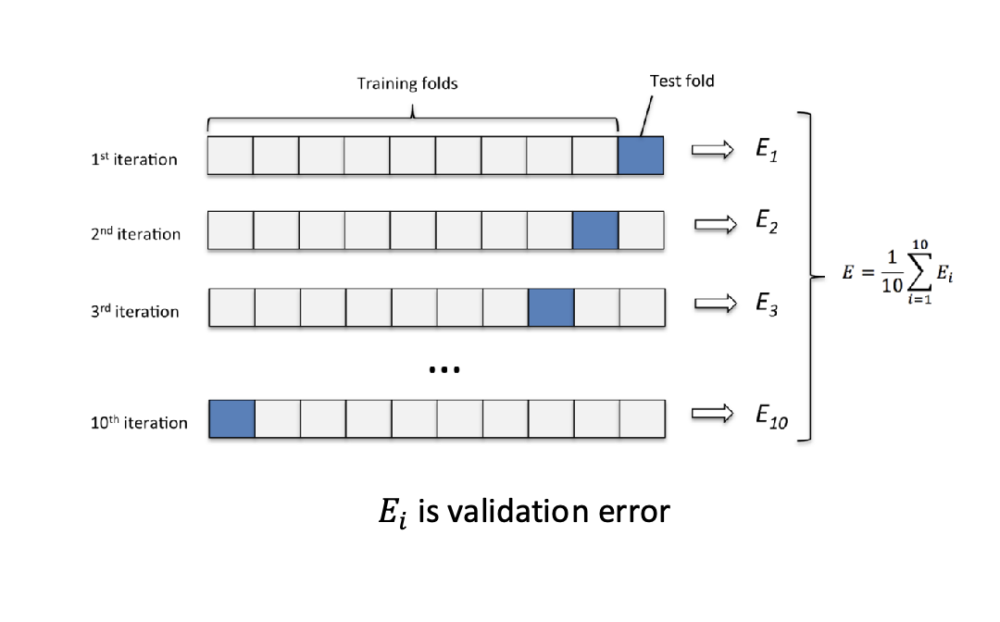
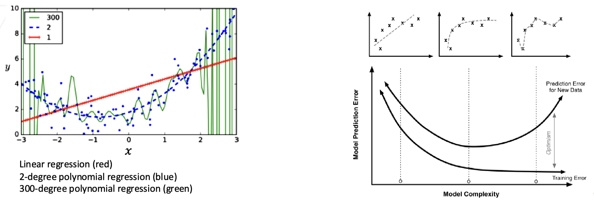
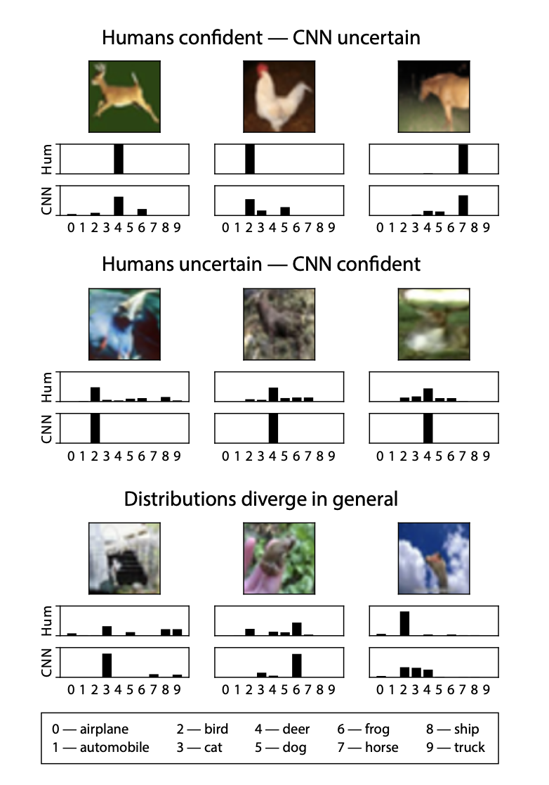

This extension to Lecture 9 focuses on evaluating regression models using performance metrics and validation techniques. While Lecture 9 covers optimization and regularization techniques, this document introduces the most commonly used performance metrics for regression. These metrics quantify how well a trained model fits the data and generalizes to unseen examples.
After training a regression model, we need quantitative ways to evaluate how well it performs. The following metrics are commonly used to assess how well model predictions match the true target values. Different metrics capture distinct aspects of prediction quality, such as error magnitude, robustness to outliers, or explained variance. As a result, multiple metrics are often reported together in practice.
1. Lecture Objectives
By the end of this extension, you should be able to:
Define and interpret common regression performance metrics (MSE, RMSE, MAE, \(R^2\))
Compare metrics based on sensitivity to outliers and interpretability
Apply model validation techniques including train/validation/test splits and cross-validation
Diagnose underfitting and overfitting using learning curves
Understand the relationship between model complexity and generalization error
2. Performance Metrics
2.1 Mean Squared Error (MSE)
The Mean Squared Error (MSE) is one of the most common metrics for regression. It measures the average squared difference between predicted values and true values.
\[\text{MSE}(\mathbf{X},\boldsymbol{\theta})=\frac{1}{N}\sum_{i=1}^{N}(\hat{y}_i-y_i)^2\]
where \(\hat{y}_i=\boldsymbol{\theta}^T\mathbf{x}_i\) is the predicted value.
Squaring the error has two important effects:
Large errors are penalized more heavily than small errors.
The function is smooth and differentiable, making it convenient for optimization.
However, because errors are squared, MSE can be sensitive to outliers.
2.2 Root Mean Squared Error (RMSE)
The Root Mean Squared Error (RMSE) is the square root of the MSE:
\[\text{RMSE}(\mathbf{X},\boldsymbol{\theta})=\sqrt{\frac{1}{N}\sum_{i=1}^{N}(\hat{y}_i-y_i)^2}\]
RMSE has the same units as the target variable, making it easier to interpret than MSE. For example, if the target variable is measured in dollars, RMSE is also measured in dollars.
2.3 Mean Absolute Error (MAE)
The Mean Absolute Error (MAE) measures the average magnitude of prediction errors:
\[\text{MAE}(\mathbf{X},\boldsymbol{\theta})=\frac{1}{N}\sum_{i=1}^{N}|\hat{y}_i-y_i|\]
Unlike MSE, MAE does not square the error. This makes MAE:
More robust to outliers
Less sensitive to large individual errors
In practice, MAE and MSE are often reported together to better understand model behavior.
2.4 Coefficient of Determination (\(R^2\))
The Coefficient of Determination (\(R^2\)) measures how well the model explains the variance in the target variable. It compares the prediction error of the model to the error of a baseline model that always predicts the mean of the target variable.
\[R^2 = 1 - \frac{SS_{\text{res}}}{SS_{\text{tot}}}\]
where
\[SS_{\text{res}}=\sum_{i=1}^{N}(y_i-\hat{y}_i)^2\] \[SS_{\text{tot}}=\sum_{i=1}^{N}(y_i-\bar{y})^2\]
Interpretation:
\(R^2 = 1\): Perfect predictions.
\(R^2 = 0\): Model performs no better than predicting the mean.
\(R^2 < 0\): Model performs worse than the mean predictor.
\(R^2\) provides a normalized measure of performance and is especially useful when comparing different models on the same dataset.
2.5 Summary of Metrics
To better understand how these metrics relate to each other, we summarize their key properties below. Each metric captures different properties of model performance:
MSE and RMSE penalize large errors more heavily.
MAE is more robust to outliers and less sensitive to large deviations.
\(R^2\) measures how much variance in the target variable is explained by the model.
3. Model Validation
Machine learning models must be evaluated carefully to ensure they generalize to unseen data. In this section, we focus on the procedures used for model validation and generalization assessment. Throughout this section, we refer to evaluation in terms of error for consistency. In general, other metrics (e.g., accuracy or \(R^2\)) may also be used depending on the task.
3.1 Training/Validation/Test Split
The test set is kept completely separate from model training and validation. Its purpose is to evaluate performance on unseen data and simulate real-world deployment. By assessing the model on this independent dataset, we ensure that the evaluation reflects real-world generalization performance.
It is critical that the test set is never used during model development. If the test set influences model design or hyperparameter tuning, the evaluation becomes biased and overly optimistic. The test set should only be used once, after the final model has been selected.
The training dataset is where the model learns. It’s typically divided into two parts:
Training Data: The larger portion used to teach the model by adjusting its parameters based on the loss function.
Validation Data: A smaller portion used to monitor the model’s performance during training. It helps fine-tune hyperparameters and assess the risk of overfitting by providing an unbiased evaluation.
The validation subset serves as a checkpoint during training. It helps identify issues like overfitting and informs adjustments to model design and hyperparameters. This ensures that the model remains robust and can generalize well to new data. Typically, 20–30% of the dataset is reserved for testing, while the remaining data is used for training and validation.

3.1.0.1 K-fold Cross-Validation Procedure
A widely used approach for hyperparameter tuning is \(k\)-fold cross-validation. The procedure is:
Shuffle the dataset randomly.
Split the dataset into \(k\) roughly equal subsets (folds).
For each fold:
Use the fold as the validation set.
Use the remaining \(k-1\) folds as the training set.
Train the model and record the validation error.
Average the validation errors across all folds.
After cross-validation, the model is retrained on the full training data before final evaluation on the test set.

3.2 Learning Curves
Learning curves are a fundamental diagnostic tool for understanding how a model improves with more data. When we evaluate a model’s performance, we typically examine two key quantities: the training error and the validation error. As we increase the size of the training set, these quantities can behave differently, providing valuable insights into the model’s learning process and its ability to generalize.
Training Error: The training error indicates how well the model fits the training data. As the size of the training set increases, the training error usually decreases initially and then stabilizes.
Validation Error: The validation error reflects the model’s performance on a separate validation dataset. This quantity helps assess how well the model can generalize to unseen data. Initially, as the training set size increases, the validation error may decrease, indicating that the model is learning relevant structure.
Learning curves are a powerful diagnostic tool. By comparing training and validation errors as the dataset size increases, we can determine whether a model is suffering from underfitting (high bias) or overfitting (high variance).
3.2.0.1 How Learning Curves Are Generated
To generate learning curves, we repeatedly train the model using increasing amounts of training data and evaluate on a fixed validation set:
Reserve a validation set of size \(v\) from the dataset of size \(n\).
For \(k = 1, 2, \dots, n-v\):
Train the model using the first \(k\) training samples.
Evaluate training and validation error.


From these learning curves, the linear model exhibits consistently high training and validation error, indicating underfitting. The polynomial model achieves lower training error but shows a larger gap between training and validation error, indicating overfitting.
3.3 Cross-Validation (Interpretation)
Cross-validation provides a more reliable estimate of generalization performance than a single train/validation split by averaging results across multiple data partitions. This reduces variance in performance estimates and helps prevent overfitting to a specific validation set.
3.4 Model Complexity vs Prediction Error
Model complexity in machine learning, often measured by degrees of freedom, refers to a model’s capacity to fit data, as seen in polynomial regression. As model complexity increases, training error typically decreases because the model can better fit the training data, potentially reaching a point where training error approaches zero, indicating it captures even the noise. Initially, testing error may also decrease as the model learns relevant patterns, but after a certain complexity level, testing error begins to rise due to overfitting—where the model learns noise instead of generalizable patterns. This highlights the bias-variance tradeoff: low-complexity models may have high bias, leading to oversimplified patterns, while high-complexity models can suffer from high variance, fitting training data well but failing on unseen data. Cross-validation helps identify the optimal level of complexity that minimizes generalization error, while regularization mitigates overfitting by penalizing excessive complexity.
Interactive Notebook: Figure 9.20 Model Complexity
Adjust model complexity and observe error behavior.

4. Model Complexity
In this final section, we briefly connect the practical ideas from this lecture to deeper theoretical concepts from statistical learning theory. The goal is not to develop full theory, but to build intuition for why model complexity, data size, and regularization are fundamentally linked.
4.1 Model Complexity
So far, we have discussed model complexity intuitively using learning curves, regularization, and the bias–variance tradeoff. We now take a slightly more formal look at what “model complexity” means.
In general, model complexity refers to the capacity of a model to fit a wide variety of functions or datasets. As discussed earlier, a more complex model has a higher capacity to capture intricate patterns in the data, but this can also increase the risk of overfitting. One way to think about model complexity is in terms of how many training samples are needed for the model to learn patterns that generalize well to new data, i.e. produce low test error. However, this quantity can be difficult to characterize. Here are a few typical notions:
The degree of the model (e.g., the degree of a polynomial in polynomial regression).
The number of parameters in the model (e.g., weights in a neural network).
The flexibility of the hypothesis space the model operates within.
The first two are essentially the same in that they describe the size of the hypothesis space. In particular, the hypothesis space describes the set of all possible functions the model can select from, given the available data and parameters. For finite spaces, the size is a fair measure of complexity. In fact, in this case we can show that the number of samples needed to adequately fit a model is bounded by the (log of the) size of the space. However, when the space is infinite, as is often the case with continuous models like neural networks, then this notion of counting parameters can break down and we need a more careful measure of complexity.
A classical theoretical way to measure model capacity is the VC (Vapnik–Chervonenkis) dimension. You do not need to compute this in practice, but it provides useful intuition about why complex models require more data. The VC dimension is a theoretical tool used to quantify the capacity of a model by determining the maximum number of points that a model can shatter. Shattering means that for a given set of points, the model can perfectly classify all possible binary labelings of those points. The higher the VC dimension, the more complex the model and the larger the class of functions it can represent.
For example, a linear classifier in 2D (like a linear SVM or perceptron) has a VC dimension of 3, meaning it can shatter any set of 3 points in the plane, but not necessarily 4.
In practice, models with high VC dimensions are prone to overfitting, as they can represent highly complex decision boundaries. However, models with a VC dimension that is too low may underfit, failing to capture important relationships in the data. The key is to choose a model with an appropriate VC dimension for the problem at hand.
While VC dimension is a powerful theoretical concept, it is not always easy to compute for real-world models. Nonetheless, it serves as a guiding principle: models with higher capacity (e.g., more parameters, higher VC dimension) need more training data to generalize well, and regularization becomes crucial to control overfitting in such cases.
This theoretical perspective reinforces the key message of this lecture: as model capacity increases, we must rely on more data, cross-validation, and regularization to ensure good generalization.
4.2 Model Evaluation Under Ambiguous Ground Truth
So far, we have assumed that every training example has a single correct label. However, in many real-world datasets the true label is not perfectly known. Different annotators may disagree, labels may be noisy, and some examples may naturally belong to multiple categories. This situation is known as ambiguous ground truth or label noise.
4.2.1 Why Accuracy Can Be Misleading
Standard accuracy assumes that dataset labels are perfectly correct. But suppose that a fraction \(\epsilon\) of labels are incorrect or uncertain. Even a perfect model cannot exceed the accuracy of the noisy labels.
\[\boxed{ \text{Observed Accuracy} \;\le\; 1 - \epsilon }\]
This means a model might appear to plateau at \(90\%\) accuracy even if its true performance is much higher. In practice, label noise creates uncertainty about how measured accuracy relates to the model’s true accuracy .
Interactive Notebook: Figure 9.25 Measured vs True Accuracy Under Label Noise
Adjust label noise and observed accuracy to inspect the range of plausible true accuracies.
The shaded region illustrates an important takeaway:
Measured accuracy is not a single number — it represents a range of possible true performances.
This relationship between measured and true accuracy under noisy labels has been studied extensively in recent work .
4.2.2 Human Label Disagreement
In many tasks, disagreement between humans is not a mistake — it is a signal of inherent ambiguity in the data. For example, an image might contain features of both a dog and a wolf, or a handwritten digit might look like both a 3 and an 8.
Recent research shows that training models using distributions of human labels instead of single “hard” labels can improve generalization and robustness .

Rather than treating disagreement as noise, we can treat it as information about uncertainty.
4.2.3 Practical Implications
When labels are noisy or ambiguous, model evaluation becomes more subtle. Standard accuracy may underestimate true model performance because the model is being judged against imperfect labels. At the same time, models can overfit to label noise, memorizing incorrect annotations rather than learning generalizable patterns. For this reason, techniques such as cross-validation become even more important, and regularization plays a key role in preventing models from memorizing incorrect labels.
These challenges motivate the use of more robust training and
evaluation strategies. In practice, modern machine learning often relies
on robust evaluation metrics, label
smoothing, and probabilistic (soft) labels
that represent uncertainty in annotations rather than assuming a single
perfectly correct label. These ideas have become increasingly important
in modern machine learning, where large-scale datasets often contain
imperfect or ambiguous annotations .
Key takeaway: Modern machine learning increasingly
treats labels as probabilistic rather than perfectly
correct.
5. Bias-Variance Tradeoff
The bias–variance tradeoff provides a theoretical explanation for the behavior observed in learning curves and model complexity plots.
Training a Linear Regression model multiple times with different datasets reveals a range of prediction scores, which can provide valuable insights into model performance. The average of these scores, referred to as bias, indicates how consistently the models perform. Models exhibiting high average error are categorized as high-bias, a result of low complexity to capture the underlying patterns in the data. Such models may cause underfitting. In the context of a high-degree Polynomial Regression model, while the bias is significantly reduced due to the model’s increased complexity and flexibility, this comes at a cost. The predictions for a given test point can vary dramatically between different polynomial models, indicating a pronounced sensitivity to the training data. This phenomenon, known as variance, arises when the model becomes overly tailored to the nuances of the training dataset, capturing noise rather than the underlying trend. Consequently, high-variance models struggle to generalize effectively to unseen data, resulting in substantially higher prediction errors when applied to new instances. Moreover, this trade-off highlights the delicate balance between bias and variance, underscoring the importance of model selection and regularization techniques to mitigate overfitting/underfitting while still achieving accurate predictions.
5.0.0.1 Bias–Variance Decomposition
Let \(x\) be a test sample, \(f(x)\) the true target, and \(\hat{f}(x)\) the model prediction. The expected squared error can be decomposed as
\[E[(f(x) - \hat{f}(x))^2] = \underbrace{(E[\hat{f}(x)] - f(x))^2}_{\text{Bias}^2} + \underbrace{E[(\hat{f}(x) - E[\hat{f}(x)])^2]}_{\text{Variance}} + \underbrace{\sigma_e^2}_{\text{Irreducible Error}}.\]
This decomposition explains why increasing model complexity can reduce bias but increase variance, and motivates the search for an optimal tradeoff.
Interactive Notebook: Figure 9.21 Model Complexity vs Error
Adjust model complexity and inspect bias/variance trends.


This decomposition motivates the bias–variance tradeoff: increasing model complexity typically reduces bias but increases variance.